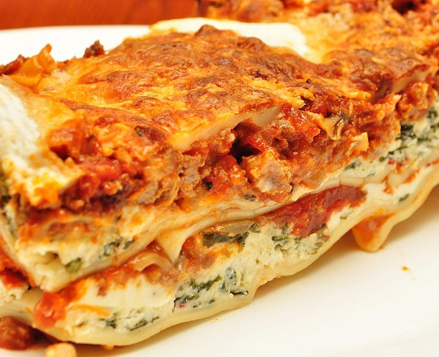

Lasagne Recipe

Easy Lasagna Recipe
This Lasagna Recipe is easy to make with a creamy ricotta cheese mixture, savory meat sauce, and mozzarella chees
I suppose since I have recipes for Skillet Lasagna, Lasagna Soup, Lasagna Roll Ups, and Taco Lasagna, we are long overdue for me to share my easy, classic lasagna recipe.This recipe has simple ingredients but tons of flavor with
- a creamy ricotta mixture
- savory meat sauce
- and lots of mozzarella cheese
This is a great freezer meal, make-ahead recipe, and leftovers freeze and reheat super well.
- Spoon meat sauce on the bottom of a lightly greased casserole dish
- Add 4 boiled lasagna noodles (or use no-boil or fresh noodles)
- Spread 1/3 of the ricotta cheese mixture on top
- Add 1.5 cups of meat sauce
- Top with mozzarella cheese. Cover and bake at 375° for 30 minutes
- Remove cover and bake for 15 more minutes
- Broil at the end if desired
- Let it rest for 15 minutes prior to serving with Garlic Bread With Cheese